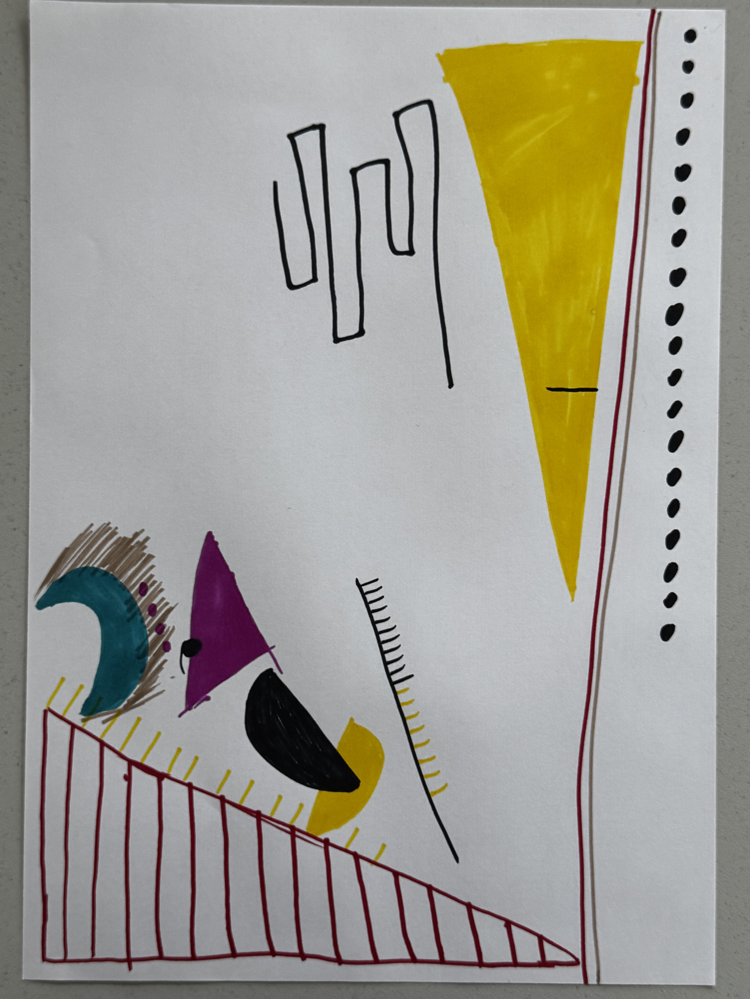

Hart's Portfolio for Introduction to Creative Computing.
This week I learned how to use the p5.js Web Editor and GitHub. At first, I tried the Copy Image Data example, but it did not work because some image files were missing. Then I changed to the Color example and it worked successfully. I also learned how to save my sketch and put the link on my GitHub portfolio. GitHub was a little difficult for me at first because I had never used it before, but now I understand the basic process better.

Today I learned about binary numbers, and I found it quite difficult and confusing. We also watched a video about a butterfly and the process of improving it again and again. I found it very interesting because I think learning is about making mistakes, correcting them and getting better step by step. Finally, we used drawing to create a Data Self Portrait, which was like introducing ourselves through shapes, colours and data. Maybe this is also a way to start thinking about how programming can represent information. I learned a lot today and really enjoyed the class, although I almost fell asleep while watching the videos.
In this project, I used p5.js to recreate a simplified version of my desktop wallpaper. I used basic shapes, lines and transparency to draw a tree, a railing and reflections in the water.
Before coding, I drew my idea on paper.

View my Draw, then Code project
Today, I finished my Draw, then Code project using p5.js. I learned that trying different ideas and making mistakes are important parts of creative coding.
I also realised that creative coding requires more maths than I expected. If I could calculate the exact positions and coordinates of shapes and lines on the canvas, it would be much easier to create what I want, instead of changing numbers again and again.
I think I need to improve my maths skills to become better at creative coding.
This week, we learned more about loops and how to use if and else statements in programming. These gave us more possibilities to create different results.
For example, we can use loops to draw many circles, and use conditions to decide when something should move, change or stay still. By combining these ideas with mathematical calculations, we can create more complex patterns and interactions.
We also learned about logical operators such as AND and OR, which allow us to create more conditions in our code.
I feel that creative coding is becoming more and more like mathematics. Sometimes it is quite complicated for me, but I can also see how these tools give us more creative possibilities. I am still learning and trying to understand them better.
Did I use AI? Yes.
AI tool used: ChatGPT (OpenAI).
How I used AI: I used ChatGPT to help me understand loops, if and else statements, and other coding concepts in p5.js. It also provided code examples, step-by-step guidance and help with debugging.
How AI was part of my process: I used AI-generated examples as learning support while completing the exercises. I tested the code in p5.js and checked the results against the exercise requirements. My reflection is based on my own learning experience and understanding.
This week, I practised different programming concepts using p5.js, including functions, arrays, conditions and interactive movement.
This week, I learned several new programming concepts, including functions, arrays and different conditions. Some of them reminded me of mathematics. I started to understand that programming is about combining different rules and conditions to create interactive results.
I still found this week's work quite complicated, especially when trying to understand how different parts of the code work together. However, after completing several exercises and practising repeatedly, I feel that I have gradually developed a better understanding of these concepts. I am becoming more confident with coding, although I still need more practice.
I used ChatGPT to help me understand programming concepts, explain parts of the code and identify errors during my practice. I also used AI to help organise and improve the English in my reflection and portfolio. I reviewed the explanations and practised the exercises to develop my own understanding.
My p5.js Exercise 1 - Coin Toss
My p5.js Exercise 2 - Drunk Walk I
My p5.js Exercise 3 - Drunk Walk II
My p5.js Exercise 4 - Drunk Walk III
This week, our teacher raised an interesting question in class: Can something created by a computer be considered art? I think the answer is yes.
In my understanding, art is a way of expressing ideas and meanings. How these ideas are expressed and understood can be influenced by the artist's intentions. For example, some abstract paintings may look difficult to understand, but they can still be meaningful if the artist has a clear idea behind them. I think creative coding works in a similar way.
Another important point is originality. Other people may be able to copy the same code and create something that looks similar, but the original idea and thinking process still belong to the creator. For me, the creative thinking behind a work is just as important as the final result.
This week, we also learned about random() and noise(). These functions showed me how randomness can bring more possibilities into digital art. Even when people use the same code, the results may be different each time the program runs. This makes creative coding more interesting because the artist cannot completely control every result.
I also think this unpredictability makes digital artworks more unique. A simple line or shape can develop in unexpected ways through code. This means that even a small program can create many different visual experiences.
Overall, this week helped me understand that creative coding is not just about writing code. It is also about using technology to express personal ideas and explore new possibilities in art.
I used ChatGPT as a learning assistant during this week's creative coding exercises. AI helped me understand programming concepts such as random(), noise(), variables and conditional statements. It also helped me identify coding errors and understand how different parts of the programs work.
I also used AI to help organise my reflection and improve my English writing. The main creative ideas and decisions were my own. I used AI as a tool to support my learning and understanding of creative coding.